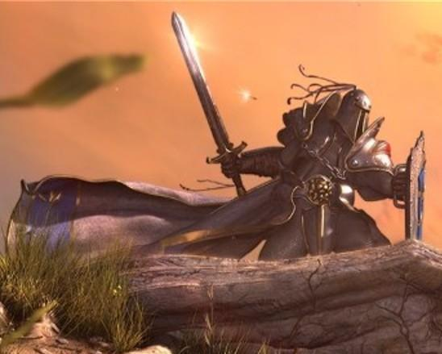

Forums galactiques > Assemblée Galactique : diplomatie officielle > Soilwork et Dieu
Pages : 1
| Parisii Respect diplomatique : 1721  11/04 ETU 23:25  | Score : 12 Détails Le commandant Parisii entra dans la Grande salle d'un pas nonchalant, et patienta un instant debout, le temps de laisser finir le précédent orateur, dont l'exposé sur les choux de batavia semblait absolument ravir Wolverine, assis au premier rang. Une fois ce brillant discours fini, il se porta au devant de l'assistance:
"Commandantes, commandants, dignes représentants des peuples d'espérance, c'est le coeur emplit d'allégresse que je viens à vous aujourd'hui. O je sais bien qu'on ne peut se réjouir de la disparition de personne, même de celle de son pire ennemi, mais la situation dont je me fais le rapporteur est vous l'avouerez cocace. Bien, aujourd'hui à 20h15 ETU, il semblerait que le commandant Soilwork, dont la récente offensive avait réveiller la peur chez beaucoup, se soit éteint dans des conditions mystérieuses. Des rumeurs parlent d'un foudroiement divin, qui le frappa au sortir de son bain annuel. Je cite le récit d'un voyageur qui semble avoir été pésent au moment du drame:" (Le commandant Parisii farfouilla dans ses poches, et en sortit un court parchemin qu'il se mit à lire) "-Le commandant Soilwork, debout sur la terrasse en peignoir, prit son laser pour abattre tous les oiseaux qui passaient par là. C'était une coutume chez lui lorsqu'il ratait une invasion, et il lui arrivait même parfois de se tromper de cible et de viser un de ses citoyens. Problème de myopie m'a-t-il dit... Bref ce jour là, alors qu'il prenait un enfant pour une grosse dinde et s'apprêtait à tirer, les nuages s'écartèrent, le ciel malgré la percée du soleil s'assombrit, et une clameur forte sembla résonner tout autour de nous, sans réellement provenir d'un point précis! Comment vous dire, cette présence nous entourait littéralement, je ne saurais pas mieux l'expliquer, elle était le ciel, la terre et l'eau, elle était nous... Je sais cela parait incroyable! Alors la voix gutturale se mit à interpeller Soilwork, oui Soilwork, lui criant des mots que je n'ai pas tous saisi: ...assez! ...péché... ...dernière fois... je... ...condamne... ...mort.... Alors un éclair traversa le seul nuage encore présent et s'abattit devant mes yeux sur ce malheureux, dont il ne resta plus que des cendres." (Le commandant Parisii releva la tête, et continua) "Ainsi le châtiment divin a parlé, soilwork n'est plus. Je vous demanderais une minute de silence pour honorer cette mort inespérée, inespérée car elle ne salit les mains d'aucun d'entre nous. J'avais fait le serment de ne tuer personne ici et les cieux m'ont entendu, blessant mortellement celui qui fut à la base de mon engagement dans la guerre Résistance chaos." Une fois son discours fini, Parisii se précipita vers ses amis, dont wolverine, qui bien que déçu par la fin du discours concernant les choux de batavia, n'en décocha pas moins un large sourire. En allant à la rencontre de ses frêres d'armes, Parisii pensa qu'il serait toujours temps de faire une minute de silence plus tard. | ||
| Ariel Golleport Respect diplomatique : 959  11/04 ETU 23:29 | Score : 6 Détails Snif. Soilwork, je te vengerais.
(Se retourne dans une pose dramatique vers le ciel. Léve son poing face aux nuages et aux vents) Même si c'est la dernière des choses que je ferais, je te vengerais, mon cher destructeur ! Dieu ! A partir de ce moment, c'est entre toi et moi. J'essayerais de ne pas trop t'amocher. | ||
| Eddard Respect diplomatique : 23  13/04 ETU 07:27 | Score : 1 Détails Enfin la guerre est terminée, nous allons pouvoir ouvrir nos systemes sans trop de danger.
Honneur à la résistance et à Dieu, la guerre est enfin finie, nous allons pouvoir survivre dans la paix. Joie et tranquillité, tels seront les maitres pour un certain temps : rien n'est éternel. | ||
| Elessar Respect diplomatique : 94  13/04 ETU 11:09 | Score : 3 Détails Vous oubliez Cronos, mon cher Eddard. Espérance ne vivra pas en paix tant que Cronos sera en moyen de prendre des systèmes tout entier. Et c'est malheuresement encore le cas aujourd'hui.
| ||
| Goshu Respect diplomatique : 1 13/04 ETU 12:08 | Score : -3 Détails oui, mais la résistance est encore la. et elle défendra tout system prit par cronos et puis maintenant qu'il est tout seul il n'a pas la moindre chance... pov cronos.
Ton ére de tyranie est enfin terminer! | ||
| Eshemir Respect diplomatique : 151  13/04 ETU 12:32 | Score : 3 Détails Au contraire Cronos est très très fort même sans Soilwork, il a des marchands qui le fournit en armes, et en kamikaze ce qui fait de lui un prédateur très puissant, à ne pas sous-estimez !!
| ||
| Arthérius Respect diplomatique : 1559  13/04 ETU 12:36 | Score : 6 Détails Exact ...
Et d'ailleurs si vous le permettez j'aimerais vous exposer ma THESE : Avez vous suivi l'évolution des cours de la contrebande??? Je pense qu'il s'agit là d'une de ses manoeuvres ... Non seulement il s'achète des vaisseaux mais en plus il empeche les autres d'en acheter ... | ||
| Parisii Respect diplomatique : 1721 13/04 ETU 12:48 | Score : 9 Détails Le commandant Parisii, ayant entendu tout et son contraire, se porta à nouveau au devant de l'assemblée:
"Pour faire dans la transparence partielle, je vous propose ce petit bulletin d'annonce de notre situation: La Triade des pappys et la résistance protègent avec hargne la Capitale dans le système 0, je vous rappelle que c'est un système fermé, la Capitale elle même étant donnée à chaque élection à celui ou celle qui remporte le plus de voix. A ce jour, Vladimir Harkonnen la détient légitimement. Le natal de Cronos est au main de la résistance, suite à une bataille qui eu lieu juste avant sa mise en vacances. Ash, Aizen Taicho, et d'autres, après de rudes combats, ont préféré entrer dans la neutralité. Je vous demande respecter leur cessez le feu. Gaara, Angel chaos, qui n'ont pas voulu se rendre, sont diminués au point d'avoir été exilés dans les confins de la galaxie, et vivent des jours sans planètes. Le natal de Soilwork vient d'être perdu, repris par le dragon, mais la contre-offensive est en marche et c'est une question d'heure avant que nous le ré-envahissions. Depuis la mort de Soilwork, c'est d'ailleurs devenu un objectif secondaire. Le reste est encore classé confidentiel pardonnez moi, mais nous ne pouvons donner à notre ennemi plus de précisions. Sachez seulement que nous sommes on ne peut plus actifs. Je laisse le soin à ceux qui sont au courant des opérations de compléter mon information s'il le juge nécessaire, et si j'ai oublié des données importantes qu'il n'est pas dangereux de divulguer" Le commandant Parisii s'en retourna alors dans le fond de la Grande salle. | ||
| Némésis Respect diplomatique : 1252  13/04 ETU 15:46 | Score : 5 Détails /*/*/*/*/
... le grand ami du Cdt Némésis, le "Vénérable" Cdt Parisii, avait effectivement omis de ... divulguer certaines informations ... ... mais bien sur, cette omission était volontaire ... ... cependant, il n'y a avait pas de secret au sujet des Nécrons, et leur changement de stratégie ... ... la guérilla systémique était devenue monnaie courante ... ... de plus, les cibles des Nécrons étaient aujourd'hui parfaitement identifiées et répertoriées ... ... il n'était évidemment pas dans l'habitude de cette race d'épargner quelques Commandants ennemis, qui avaient su, à leur époque, mener de forts belles attaques contre les bases Nécrons ... ... maintenant, la tyrannie étant en perte de vitesse, il devenait très facile pour ces valeureux guerriers d'annoncer un cessez-le-feu ... ... pour se reconstruire et repartir de plus belle ? ... ... Le NightBringer avait bien fait comprendre au Cdt Némésis, qu'il était hors de question de laisser la moindre chance, ou plus exactement, de prendre le moindre risque au sujet de ces ennemis d'antan ... ... la seule issue que pourrait éventuellement envisager le peuple Nécron, serait ... un exil de tous ces Cdts ... ... mais cette solution, il aurait fallu pouvoir la proposer au NightBringer ... ... et le Commandant Némésis tenait trop à sa vie pour s'y risquer ... /*/*/*/*/ | ||
| Gunther Respect diplomatique : 286  13/04 ETU 17:56 | Score : 4 Détails Un tyran disparaitra toujours si puissant qu'il est!
Car un commandant seul ne peut pas résister contre personnes enragés par les atrocités qu'il leur a fait subir. La tyrannie ne sera jamais durable! Gunther anti-tyrannique | ||
| Gemnoth-Sinn Respect diplomatique : 358  13/04 ETU 18:05 | Score : 5 Détails "Parfois je déséspère, mais alors je me rapelle que l'amour et la vérité ont toujours triomphé. Les tyrans pour un temps nous paraissent invincible, mais ils finissent toujours par disparaître"
Mohandas K. Gandhi (un peu approximé, je l'admet) | ||
| féderant Respect diplomatique : 2 13/04 ETU 19:39 | Score : 2 Détails Chers commandant(e)
Je m'appelle féderant et je suis nouveaux. Je m'exuse avant tout de m'incrusté sur ce forum sans autorisation mais il falais bien en choisir un. Je vous demande aujourd'hui d'être indulgins a propos de mon érreur de de m'expliqué le jeu. Maintenant que vous savez que je suis encore faible je vous demandrais de me laisser trois jour pour m'améllioré. Une dernierre choses, j'ai entendus parlé des coa lition pourriez vous m'en expliqué un peux plus. Je vous en remmercis beaucoup. féderant de la guilde | ||
| Heracles Respect diplomatique : 163  13/04 ETU 20:25 | Score : 1 Détails HRP
voir mon mp HRP |
Pages : 1
Forums galactiques > Assemblée Galactique : diplomatie officielle > Soilwork et Dieu